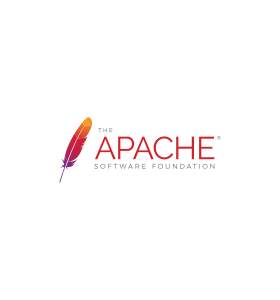
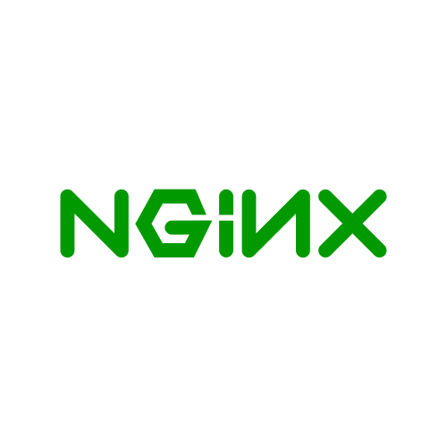

-
HTML
-
CSS
-
ARUBA
-
SQL
-
APACHE
-
JAVA
-
LINUX
-
DOCKER & COMPOSE
-
NGINX
-
VM AZURE
-
SHELL
-
POWERSHELL
-
PYTHON
- jetbrains
-  apache
- linux
-
 git
git
-
 docker
docker
- nestjs
-  nginx
-
 vscode
vscode
-
 nextjs
nextjs
- 2018 - TahitiCodeCamp dev. web CNAM Polynésie
- 2025 - CCNA 200-301 En prévision
- Emulateur Serveur Lineage II
- Tennis de table
- Voile
- Voyage
À propos de moi
Passionné d'informatique depuis mes débuts avec un émulateur de serveur Java, j'ai acquis une solide compréhension des infrastructures systèmes, réseaux et sécurité. Mon rôle consistait à configurer serveurs, bases de données et droits d'accès, tout en assurant une expérience fluide pour les utilisateurs. La gestion des ports sur serveurs Windows, Linux et routeurs, que je continue à pratiquer par passion, me permet de maintenir des compétences constamment à jour.
Parcours professionel
-
BRAINIX Avril 2025 à Présent
Technicien informatique niveau 1, technicien systèmes et réseaux Papeete
En tant que technicien, je gère l’ensemble des parcs informatiques matériels et logiciels, ainsi que les serveurs de plusieurs lycées et d’un hôtel. Mes missions incluent la supervision, la maintenance et la configuration du matériel réseau, aussi bien physique que logique. Je m’assure que l’ensemble du matériel reste opérationnel afin de garantir la continuité de service. Je veille également à ce que les différents réseaux soient bien segmentés et redondants, pour éviter toute interruption lors des pics d’utilisation. En cas de problème, j’interviens rapidement pour débloquer la situation, puis je collabore avec mon équipe pour en identifier la cause et la résoudre. Je travaille avec plusieurs interlocuteurs : collègues techniciens (câbleurs, techniciens niveaux 1 et 2), ainsi que les référents des établissements.
- Intervention sur site ou à distance pour la gestion des serveurs et du réseau.
- Assistance aux utilisateurs en cas de problème système ou réseau sur leur poste.
- Paramétrage des switchs : interfaces, VLANs, adresses IP.
- Supervision des équipements pour assurer leur bon fonctionnement.
- Suivi et traitement des tickets d’incidents.
-
Direction du Système d'Information Octobre 2024 à Avril 2025
Technicien Système et Réseau Papeete
En tant que Technicien, je gère l'ensemble des parcs informatiques des différentes administrations de Tahiti. Mes missions incluent la supervision, la maintenance et la configuration du matériel réseau (serveurs de fichiers, NAS, switchs, routeurs). Je configure des VLANs pour segmenter les réseaux, mets en place des RAID logiciels (RAID 0 et RAID 1), et restaure les ACL en cas de besoin. Je veille à la vérification des sauvegardes quotidiennes et hebdomadaires, et j'interviens pour corriger et restaurer les systèmes en cas d'erreur.
- Intervention sur les sites distants ou sur place pour la gestion des serveurs de fichiers, NAS, switchs et routeurs.
- Configuration de RAID logiciels (RAID 0 et RAID 1).
- Paramétrage des switchs : interfaces, VLANs et IP.
- Supervision des équipements via SNMP pour garantir leur bon fonctionnement.
- Gestion des sauvegardes : vérification, réparation et restauration.
-
Tahiti Numérique Mai 2024 à Octobre 2024
SysOps et Responsable Matériel Papeete
En tant que SysOps, je gère l'ensemble du parc informatique des utilisateurs de Tahiti Numérique ainsi que les serveurs des clients sous Linux et Windows. Je suis également responsable du matériel de Tahiti Numérique, comprenant les bornes Qmatic, les ordinateurs, le soft routeur, le réseau infra et les périphériques. Enfin, je suis également opérateur de sécurité.
- Configuration et test des bornes Qmatic pour divers clients
- Gestion des VM Azure en Front et Back End Qmatic
- Inventaire et monitoring des ordinateurs et périphériques de Tahiti Numérique
- Gestion des serveurs Linux OVH pour les applications Maarch
- Administration du firewall, du proxy, de l'annuaire des utilisateurs et de l'EDR pour Tahiti Numérique
-
Océanienne de Services Bancaires Février 2021 à mai 2024
Administrateur d'applications - Developpeur web - Support technique niv.2Papeete
En tant qu'administrateur d'applications, j'ai géré la maintenance et le bon fonctionnement des sites Web existants, tout en assurant le support d'une plateforme de paiement essentielle.
- Déploiement de conteneurs Docker et Docker Compose en conformité avec les normes PCI-DSS pour les environnements de test et de production.
- Correction des erreurs dans le code PHP et déploiement en production sous Docker.
- Optimisation des connexions sécurisées aux bases de données.
- Configuration de serveurs reverse proxy (Nginx ou Apache) pour la gestion des flux web.
- Gestion du workflow entre les environnements de développement, de préproduction et de production avec Git, Docker et Docker Compose.
- Coordination avec des techniciens externes pour le support de niveau 2 lors de l'intégration de modules de paiement.
- Gestion annuelle des certificats SSL pour tous les serveurs de l'entreprise et de ses filiales.
-
Freelance 2018-2020
Intégrateur web - CMS Prestashop/WordpressRaiatea
En tant qu'intégrateur web spécialisé en HTML/CSS et PHP, j'ai travaillé sur le CMS PrestaShop pour un client basé à Raiatea. Mes responsabilités comprenaient l'amélioration et la mise en place de modules, ainsi que l'optimisation du code HTML et CSS en réponse aux exigences spécifiques du client.
-
Freelance 2018-2019
Chef de projet - Product ownerTahiti -Raiatea
- Analyse des besoins clients : Recueil et formalisation des exigences fonctionnelles et techniques du client dans un cahier des charges détaillé, en veillant à une compréhension précise des objectifs et des contraintes.
- Coordination avec l'équipe de développement : Transmission du cahier des charges au chef de projet et à l'équipe de développement pour la conception et la réalisation du MVP (Minimum Viable Product).
- Suivi du développement : Collaboration étroite avec l'équipe technique pour assurer le respect des délais, des spécifications et de la qualité du produit.
- Validation et feedback client : Organisation de réunions de suivi avec le client pour présenter le MVP, recueillir les retours et identifier les axes d'amélioration.
- Gestion des itérations : Coordination des ajustements et des évolutions du produit en fonction des feedbacks clients, jusqu'à la livraison finale.
- Communication et reporting : Mise en place d'un reporting régulier pour informer le client de l'avancement du projet et garantir une transparence totale.
Projets
-
Configuration et déploiement de commutateurs réseau sur siteARUBA COMMUTATEUR RESEAUX MATERIELS▼
-
Mise en place serveur et borne QMatic pour CCISMAZURE VIRTUAL MACHINE WINDOWS SERVER RESEAUX MATERIELS▼
-
Automatisation des renouvellements de certificatsAZURE VIRTUAL MACHINE WINDOWS SERVER POWERSHELL▼
-
Déploiement d'un script batch pour mode kioskWINDOWS 11 POWERSHELL▼
-
Déploiement d'API sous PCI-DSSNGINX DOCKER DOCKER COMPOSE GIT LINUX▼
-
Evolution et OptimisationHTML CSS PHP DOCKER DOCKER COMPOSE NGINX GIT LINUX▼
-
Exploitation et bon fonctionnementLDAPS WINDOWS SERVER CERTIFICAT TOMCAT▼
Parcours Scolaire
-
CNAM Polynésie
Licence Informatique
-
Université de Polynésie Française
Diplôme d’Accès aux Études Universitaires